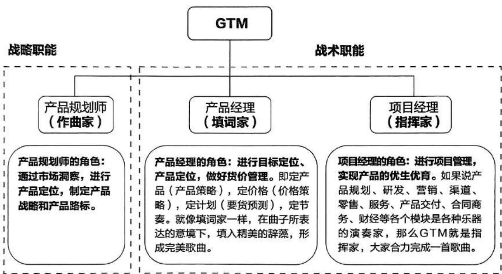
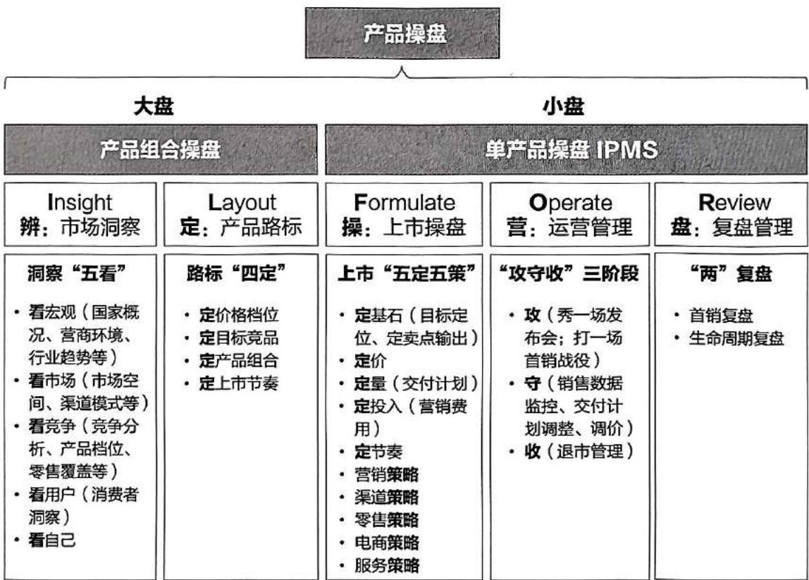
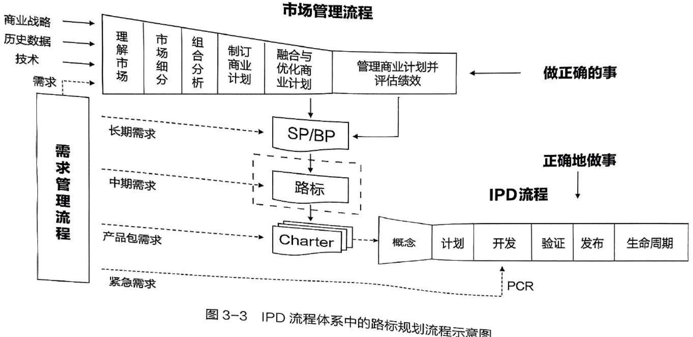
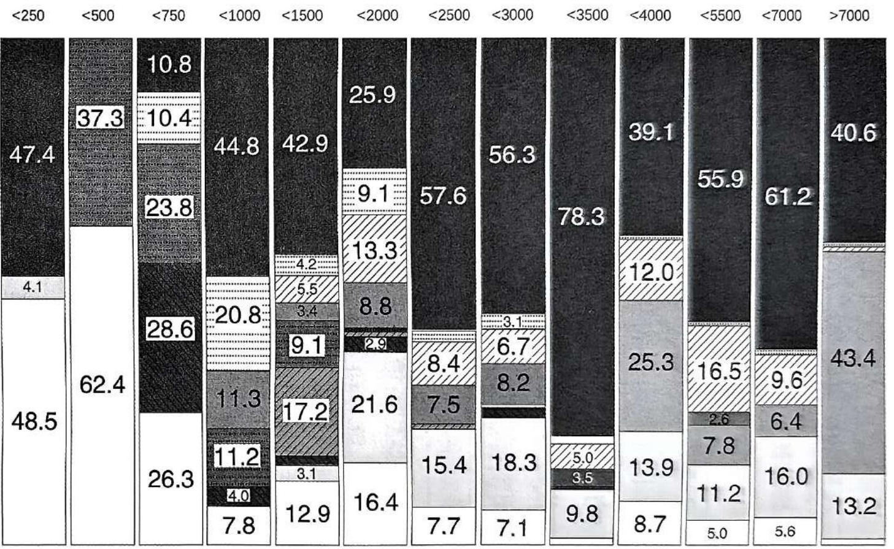
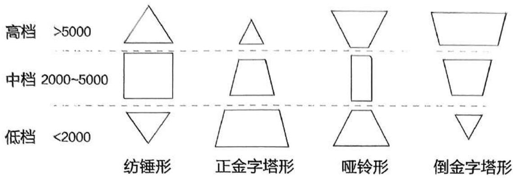
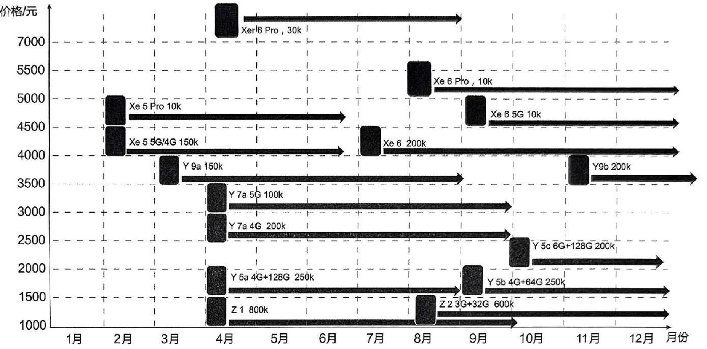

第3章 产品操盘之战略盘
3.1 产品操盘方法及保障机制
3.1.1 产品操盘 ILFOR 五步法
在 2.2.2 “GTM 究竟是什么神秘组织？”一节中提到的 GTM 业务一般分为 GTM 策略、产品 GTM 和市场 GTM 三个方向的岗位，统筹推动产品上市。这些岗位负责品牌运营、市场动态分析、产品生命周期管理等工作，确保产品能够触达目标人群并促成交易。因此，GTM 兼具战略职能和战术职能，如图 3-1 所示。

图3-1 GTM的战略职能与战术职能
综上所述，产品操盘分为战略职能操盘（大盘“产品组合操盘”）及战术职能操盘（小盘“单产品操盘”）。产品组合操盘是基于公司 SP/BP，再结合市场洞察后形成的产品战略，以产品路标作为输出目标。而单产品操盘 IPMS 则是针对某一款产品，从产品规划到退市的全生命周期管理，以实现该产品的商业成功；同时，通过操盘标准化，实现跨领域业务协同、逐代积累传承，以提升产品操盘能力和使项目持续成功为目标。每个战术级操盘的成功都是“积小流以成江海，积跬步以至千里”，最终助力公司级战略目标的达成。公司产品端到端操盘方法如图 3-2 所示。
产品操盘“辨定操营盘”ILFOR五步法：市场洞察（辨）、产品路标（定）、上市操盘（操）、运营管理（营）、复盘管理（盘）。

图 3-2 产品操盘 “辨定操营盘” ILFOR 五步法
3.1.2 产品操盘 PCPC 保障机制
一个上市表现良好的产品背后肯定有一套好的上市操盘方法，为方便记忆，称之为产品操盘 PCPC 保障机制。
1P（Process）流程保障：1 个 IPMS 流程——执行好该流程，从市场销售人员的视角，解读产品开发各节点的市场环节准备度，设计相应的上市准备动作和过程，使之规范化、流程化。
2C (Conference) 组织保障: 2 个会 —— PCT 例会和 GTM 操盘委员会
4P (Point) 节点保障: 4 个关键控制点 (里程碑点) ——拓展准备 (GR2)、上市准备 (GR4)、首次调价 (GR5A)、退市操盘 (GR6)
4C（Carriage）业务保障：4 驾马车 —— GTM 为马头，牵引四驾马车（零售 /MKT/MO/ 研发部）
1. 1 个 IPMS 流程
产品操盘的业界最佳实践来自华为。IPMS 流程是华为花费 10 余年时间总结出来的，且经过数十款、数百款产品（涉及 $1 + 8 + \mathrm{N}$ 战略的全产品）使用并证明行之有效的产品操盘方法论，是可以作为标杆经验供其他企业学习、借鉴的。经过 MPP 流程至 GTM 流程再发展至 IPMS 流程，产品操盘的方法基本成熟，并且 IPMS 是具有生命力的，可以不断地自我完善和更新、迭代发展。有了 IPMS 流程，产品操盘就有了流程保障。
2. 2个会
(1) PCT 例会
在 2.4.2.3 “IPMS 运作机制” 一节中介绍过 PCT 重量级团队，成员包括来自各个职能部门的专家，如渠道专家、品牌专家和零售专家等。这些成员都是从各个职能部门选拔出来的，他们参与到产品操盘过程中，讨论具体的细节问题，并做出决策。PCT 团队定期召开会议，这也是 IPMS 流程中的基础管理团队会议。其主要功能是跨部门协调和信息同步，确保各个部门之间的沟通顺畅，避免因信息不对称导致的问题。例如，在研发部门开发某个功能时，零售部门可以提前进行物料设计，但如果研发部门最终决定放弃该功能，零售部门需要及时调整设计以避免浪费资源。
PCT 例会通常每周举行一次，但是，如果特别紧急也可以随时召开。PCT 例会不仅是一个信息共享平台，也是一个决策平台，用于解决跨部门协调和信息同步的问题。
(2) GTM 操盘委员会
GTM 操盘委员会则是一个比 PCT 会议更高层级的决策机构，其成员包括销售部、产品线、营销部等各部门的领导。这个委员会的主要职责是对一些关键进展和决策点进行统一评议和决策。具体来说，IPMS 流程中需要上到 GTM 操盘委员会决策的点主要有 GR2、GR4、GR5A 和 GR6 四个关键控制点。其他重要事项如果 PCT 会议解决不了，也可以升级至此进行决策，但是例行决策就这四个方面。
GTM 操盘委员会的运作机制确保了关键节点的决策能够迅速且有效地进行，这种机制不仅提高了决策效率，还确保了各部门之间的协同作战能力。
通过 PCT 例会和 GTM 操盘委员会这两个会议机制，实现了跨部门的信息同步和高效决策。PCT 例会作为基础管理团队会议，负责日常的信息共享和问题解决；而 GTM 操盘委员会则作为更高层级的决策机构，确保关键节点的决策能够迅速且有效地进行。
有了重量级操盘组织及召开好这两个例会，产品操盘就有了组织保障。
3. 4个关键控制点
在 IPMS 流程推进过程中，有四个关键控制点，所谓关键指的是对业务影响较大的，需要决策及明确的。如图 2-29 IPD 和 IPMS 关系示意图中，四个 “◆” 所示即为拓展准备（GR2）、上市准备（GR4）、首次调价（GR5A）、退市操盘（GR6）。这四个关键控制点需要经过 GTM 操盘委员会的决策。把控好这四个关键控制点，产品操盘就有了节点保障。
4. 四驾马车
在华为的 IPMS（集成产品营销、销售与服务）流程中，零售部、营销部、MO 营销运作部和产品线研发部各自扮演着关键角色，并通过紧密协作来确保产品的成功上市和市场
爆品操盘 GTM表现。
-
零售部：零售部主要负责终端的销售和市场推广工作，确保产品能够有效地触达目标市场和消费者，并实现零售目标。零售部要与营销部紧密合作，制订具体的零售计划和相关活动。
-
营销部：营销部在 IPMS 流程中负责整体的市场推广和品牌建设，包括市场调研、品牌定位、广告宣传等。营销部需要与零售部协调，确保市场策略与销售计划的一致性。营销部还负责识别高价值用户群体并制定相应的营销策略，以提升品牌知名度和顾客满意度。
-
MO 营销运作部: MO 在华为的定位属于研发部门, 但它的职责是把研发的语言转化为市场上能够作为营销的语言去封装, 例如卖点的封装、发布会的材料等。其核心任务是支持市场运作, 使产品更具市场竞争力。举例: “采用先进的深度学习算法通过大数据分析实现了对家居设备的智能控制” 这是研发语言, “想象一下, 只需一句话或一个手势, 家中的灯光、空调、窗帘等设备就能自动调整到您喜欢的状态, 我们的智能家居控制系统让您的生活更加轻松自在” 就是营销语言。又如戴森吸尘器, “戴森专利 V10 数码马达驱动, 130AW 强劲吸力” 是研发语言, “强大吸力, 可以吸附 99.97% 小至 0.3 微米的微尘” 就是营销语言。
-
产品线研发部：产品线研发部则专注于产品的设计和开发。它需要根据市场反馈和消费者需求进行快速调整，确保产品具有竞争力。研发部需要与 MO 紧密合作，将研发成果转化为市场可接受的产品特性；同时，研发部还要与营销部紧密合作，以确保产品设计符合市场需求，并通过 GR 点将 IPD 流程与 IPMS 流程建立互锁机制，支撑决策。
在整个 IPMS 运作过程中，零售部、MKT、MO 和研发部这四个部门需要全程参与，每个阶段都要投入相应的资源和精力。在 GTM 的带领下，他们步调一致、群策群力、力出一孔，为产品操盘提供了业务保障，以确保项目的顺利推进和产品的成功上市。
3.2 产品操盘——战略盘：公司级产品组合操盘
“波音公司在 777 客机上是成功的。波音在设计 777 时，不是说自己先去设计一架飞机，而是把各大航空公司的采购主管纳入 PDT 中，由各采购主管讨论下一代飞机是怎样的，有什么需求，多少个座位，有什么设置，他们所有的思想就全部体现在设计中了。这就是产品路标，就是客户需求导向。产品路标不是自己画的，而是来自客户的。”
公司级的产品路标规划是有一套路标规划流程（RDP ）的，在2.1.1“师承IBM的华为IPD体系”一节中有所提及，其在IPD体系中的位置如图3-3所示。

图 3-3 IPD 流程体系中的路标规划流程示意图
路标规划主要采用市场管理 MM（Marketing Management）方法作为指导。市场管理运用科学、规范的方法，对市场走势、竞争态势、客户要求及需求进行分析，在合理的市场细分规则下对目标细分市场进行选择和优先级排序，制订可执行、可落地、可盈利的商业计划，定义实现市场商业成功所需要执行的营销、开发、上市销售等活动。
市场管理主要包括理解市场、市场细分、组合分析、制订商业计划、融合和优化商业计划、管理商业计划并评估绩效等六个主要活动步骤（见表 3-1）。
公司级的产品路标规划、开发、推广、管理是有一套严密的方法的，以保证“做正确的事”。由于本书主要讨论产品操盘上市的内容，因此不对公司级的产品路标规划做详细阐述（可参考产品研发类的书籍，其中均有详细的描述）。本书后续主要是以地区部或代表处的视角，对该地区部或代表处负责的国家进行市场洞察，并在公司产品路标的指引下输出该国家的产品路标，以获得品牌方的产品在该国家的商业成功。（华为有三层操盘架构：第一层是总部机关，第二层是地区部，第三层是代表处。以南太地区部为例，下辖菲律宾代表处、印度尼西亚代表处、马来西亚代表处等。根据国家的战略地位、市场重要度、市场体量等因素，一个代表处可以负责一个国家或者几个国家。）
公司级的产品路标规划不是公司总部的一些人在办公室里拍脑袋想出来的。我们看到，在市场管理的第一步就是理解市场，要进行市场调查、数据整理、环境/市场/竞争分析、
表 3-1 市场管理主要活动步骤
| 理解市场 | 市场细分 | 组合分析 | 制订商业计划 | 融合与优化商业计划 | 管理商业计划并评估绩效 |
|---|---|---|---|---|---|
| ·市场调查·数据收集·环境/市场/竞争分析·自身分析·SWOT¹分析·市场地图·业务设计评估 | ·细分目的及框架·谁购买?·购买什么?·为什么购买?·初选细分市场·验证细分市场·细分市场描述 | ·战略地位分析·财务分析·组合分析·选择目标市场·更新细分市场描述 | ·产品线目标假设·差距分析·增长分析·细分市场财务目标、战略目标、价值定位、业务计划 | ·产品线业务计划·产品策略分析·识别潜在项目·PDC²组合分析·输出项目清单·制定产品路标规划 | ·产品包业务计划·制定项目任务书·KPI³考核表·业务计划执行·绩效监控及改进 |
SWOT: Strengths Weaknesses Opportunities Threats 的缩写，意 PDC: Portfolio Decision Criteria 的缩写，意为组合决策标准。 KPI: Key Performance Indicator 的缩写，意为关键绩效指标。
SWOT 分析等，这些都需要进行大量的调研和信息输入。另外，在公司内部，产品路标规划有一个“自下而上”再“自上而下”的过程。国家代表处会将含有“产品组合、定制诉求、配置要求、销售目标、上市时间、价格诉求、渠道选择策略、营销投入、要货计划”等内容的报告提交给地区部，地区部的 GTM 再整合各国家代表处的信息，最终形成地区部报告提交至公司总部 GTM。总部 GTM 根据各个国家代表处和地区部提交的报告，最终形成含有“产品组合、销售目标、SKU 规划、价格授权、上市时间、优先级”的产品策略（即产品路标）。
3.3 产品操盘——战略盘：国家产品路标规划
3.3.1 产品操盘之“辨”——市场洞察
3.3.1.1 市场洞察的意义及“五看三定”方法
市场洞察的意义
“没有调查，没有发言权”，这是早在 1930 年 5 月中国共产党领导人毛泽东为了反对当时红军中存在的教条主义思想，在专门撰写的《反对本本主义》一文中提出的著名论断。在前面的文章中，我们多次提到市场调查、市场洞察、零售普查等，这些工作的起点都是始于洞察，由此可见其重要性。下面将介绍市场洞察及相关举例，这是做好战略、做好规划的基本功。
洞察“五看三定”
洞察，在百度百科上是这样解释的：看穿，观察得很透彻；发现内在的内容或意义。因此，洞察不是简单的观察、调查，而是在于通过观察、调查获取表象信息及数据，然后对这些信息和数据进行深入挖掘和分析后形成结论，这些结论将指导后续的行为或活动。洞察结论是对未来的预判，因此不难理解市场洞察对于指导一家公司战略规划的重要意义。华为 BLM 业务领导力模型进行战略规划的第一个步骤就是“市场洞察”。这一步骤旨在通过市场调研和分析，深入了解市场趋势、客户需求以及竞争态势，为战略决策提供有力的数据支持。上节提到的路标规划的重要输入项，也是基于对市场、市场细分以及组合分析的深入理解而得出的结论，这足以证明市场洞察在战略规划中的重要性。市场洞察的方法一般采用“五看三定”法，其中“五看”具体如下：
-
看趋势 / 行业：宏观环境分析、行业趋势分析，识别技术革新、政策变化带来的机会与威胁（分析模型：PEST 模型—政治、经济、社会、技术）；
-
看市场/客户: 通过市场地图和客户需求模型细分市场, 明确客户需求痛点和购买行为 (分析模型: 如 $ APPEALS 模型、价格、可获得性、包装、性能、易用性、保证程度、生命周期成本、社会接受程度);
-
看竞争：对竞争对手进行充分分析，包括现有竞争者、潜在进入者、替代品等，知彼（分析模型：波特五力模型）；
-
看自己：内部资源与能力分析，知己（分析工具：商业
“五看”只是一个概数，随着竞争加剧和技术进步等原因，影响一个企业商业成功的因素越来越多，需要洞察的领域也不断扩大。现在，有的企业还要看供应链、看上下游，因为企业在供应链中的能力和地位也越发影响到公司战略的制定和未来的布局。
“三定”：基于“五看”已经看清楚大格局、大趋势，看清楚自己所在的位置，那么接下来首先要确定的是企业的战略控制点，即独有的优势或是不易被模仿、超越的核心竞争力；再下一步是确定要到达的位置（定目标），以及到达这个位置的方法（定策略）。
- 定战略控制点：可以简单理解为是护城河，是一种不易构建，但也不易被模仿、不易被超越的中长期核心竞争力，能够有效抵御竞争对手，削弱对手竞争能力的优势因素。举例：高通在移动通信芯片领域拥有众多核心技术专利，以技术为战略控制点；可口可乐以品牌资产作为战略控制点；腾讯通过微信支付、QQ等产品，在互联网支付和社交领域占据了绝对的市场份额，这是其重要的战略控制点；沃尔玛超强的供应链管理是其成功的战略控制点；海底捞以卓越的客户服务作为战略控制点。这些控制点都让这些企业保持了长期竞争优势。
再以 TCL 电视为例，其通过战略选择及确立技术控制点，实现 “高端突围、王牌归来”。2024 年较 2021 年净利润增长 7 倍, 产品 NPS (净推荐值) 持续提升, 从 45 提升至 54, 75 英寸 (约 190.5 厘米) 及以上大板出货量全球第一。TCL 是怎么做到的呢? 为了实现 “成为全球前三的电视品牌、高端产品占比 40% 以上、技术自主及产业链整合、打造智慧家庭生态、实现可持续发展” 的战略目标, TCL 将 Mini LED 技术作为突破方向, 这是历史上第一次由中国品牌引领电视领域的一个新品类。通过深耕, TCL 在 Mini LED 领域建立了 21 项技术控制点, 布局了 153 项核心专利, 筑起了行业护城河。在全球范围内, TCL 的 Mini LED 电视销量已接近三星, 且在中国市场名列前茅。
- 定目标：在确定了战略控制点之后，接下来就要设定清晰的战略目标。这些目标通常采用 SMART 原则（具体性、可衡量性、可实现性、相关性、时限性）来确保其科学性和可操作性。
S (Specific): 目标必须是具体、明确的, 不能模糊, 要让人清楚知道需要达成的结果是什么。
M (Measurable): 目标必须是可衡量的, 能够进行判断。
A (Attainable): 目标必须是可实现的或具备实现的可能性, 要考虑资源、能力、精力、时间等因素。
R (Relevant): 与其他目标有一定的相关性, 不是孤立的,有助于推动其他目标的实现。
T（Time-bound）：目标必须有明确的截止日期。
例如，“截至 2025 年 1 月 17 日，完成不少于 10 万字的《爆品操盘》的初稿”就是符合 SMART 原则的目标了。
- 定策略：基于战略控制点以及目标，制定实现目标所需的关键任务、关键举措等。各种策略的落地执行可保证目标的达成，走向成功。
市场洞察是业务基本功
市场洞察不是一次性的工作，而应该是作为一项业务的基本功去对待。GTM要牵头组建市场洞察小组，梳理模板并定期收集小组内信息，在日常工作中日积月累，减轻“洞察”工作的负担。之后以周或月为维度形成周报、月报进行归档，方便共享和调用。各职能部门可以参考的洞察维度如下：
-
GTM：市场价格动态、各档位产品规格、行业新产品、市场空间及份额……
-
渠道：客户拜访信息反馈、客户计划及预算、竞品政策及动态、客户发展规划、容量……
-
零售：线下客流趋势、门店竞争态势、陈列技术变化、促销资源……
-
营销：媒体动态、相关行业展会、社会热点、KOL信息……
-
电商：线上流量趋势、竞品活动、用户反馈、网店运营情况……
-
交付：产能动态、仓储情况、物流费用变化……
-
服务: VOC、竞品售后情况……
3.3.1.2 国家产品操盘的市场洞察
国家产品策略及路标的制定承载着代表处（以一个代表处负责一个国家为例，产品为手机，下文同）SP 和 BP 在营销体系内的解码及落地任务，是国家整体战略规划和资源分配的依据。其目的是确保企业在整个市场中取得胜利，既达成销售增长的目标，又完成品牌的积累。
国家市场洞察“五看”
国家市场洞察通过 “五看” 工具进行（此 “五看” 聚焦于一个国家的产品策略，因此其宽度、广度和深度都会低于制定战略时的市场洞察 “五看”）。市场洞察的主要维度、输入项（数据源）、输出项（有效信息）等内容如下：
1. 看趋势 / 行业的维度
(1) 国家概况
输入：人口数量、宗教、性别及年龄结构、经济发展趋势、人均 GDP、人均收入等；
输出：整体国家的购买力水平、主力购买人群等。
(2) 营商环境
输入：政治环境、人文环境、安全性、税务、法律、汇率稳定性等；
输出：总体经商环境、存在的潜在风险等。
(3)行业趋势
输入：技术发展趋势、手机发展趋势、未来需求方向等；
输出：技术发展水平、未来对手机的需求等。
看宏观的结论：对国家商业模式及未来方向有初步判断。
2. 看市场 / 客户的维度
(1) 市场空间
输入：手机保有量、渗透率、平均单价、价格档位占比、市场类型、主要品牌及占有率等；
输出：整体市场规模及可适配的产品。
(2) 渠道模式
输入：运营商、国家级代理商、分销、线上线下等情况；
输出：掌握国家所需的渠道模式，初步判断本公司适配的渠道模式。
(3) 零售业态
输入：独立手机店、通信连锁店、电器店、运营商店、品牌专卖店、线上店铺等；
输出：确定适合本公司的零售阵地。
看市场的结论：对产品布局、渠道和零售模式有初步判断。
3. 看竞争的维度
输入：行业地位、渠道和零售现状、品牌及营销投入、产品及人力布局等；
输出：各竞争品牌的市场策略，优劣势。
看竞争的结论：锁定主要的竞争对手，明确竞争策略。
4. 看用户（消费者）的维度
(1) 目标人群 (消费者画像)
输入: 对消费者进行细分, 如年龄、性别、收入、行业等, 描绘目标消费者的特征、需求、偏好、生活方式及价值观等;
输出：锁定各产品档位的目标人群以及不同人群的痛点及需求，形成消费者画像。
(2) 消费习惯 (消费行为分析)
输入：针对消费者细分人群的购买习惯、购买路径、决策过程等进行调研并提炼影响因素；
输出：掌握影响消费者购买产品的关键因素。
(3) 媒介及品牌洞察
输入：针对消费者细分群体的媒介触达方式及影响品牌感知的因素进行调查；
输出：确定适合的传播媒介及影响消费者对品牌认知的关键因素。
看用户的结论：对产品定义、营销及品牌策略有初步判断，有明确的消费者画像。
5. 看自己的维度
输入：技术、产品、营销、渠道、消费者认知等。
输出：初步适合该国的产品操盘策略。
看自己的结论：明确技术、产品策略、营销策略、渠道及零售策略等。
消费者洞察
产品策略最重要的一项是消费者洞察。以消费者为中心、满足消费者需求，是 To C 企业的一项核心能力。华为从向公开市场转型那一刻起，就把“华为终端产业竞争力的起点和终点，都是源自最终消费者”作为最高行动纲领。
消费者洞察是指通过深入研究和分析消费者的需求、行为和特征，以帮助企业更好地了解和满足消费者需求的过程。它通常包括对消费者画像、购买行为、消费心理等方面的系统分析，从而为企业制定有效的产品策略与营销策略提供支持。下面介绍一些消费者洞察的理论及方法：
1. 焦糖布丁理论
哈佛大学教授克莱顿·克里斯坦森在《与运气竞争》一书中提出了一个关键理论——Jobs to be done（JTBD），即“需要完成的任务”，国内也戏称其为“焦糖布丁”理论。这个理论的核心思想是：顾客购买一件商品，并不是想拥有这件商品，而是想“雇用”这件商品帮他完成一个现实世界中的任务。
焦糖布丁理论是研究消费者购买行为、挖掘产品背后消费者动机的理论。
消费者是很现实的，他们不会为了产品而购买产品，而是为了满足某种需求或让自己获得某种好处而选择产品。例如，“顾客并不需要一个1/4英寸（约0.64厘米）的钻头，他只是需要一个1/4英寸（约0.64厘米）的洞”，钻头只是产品，打洞才是任务。又如，“奢侈品包包的情绪价值要大于其装物的使用价值”。
JTBD 提供了一个新颖的角度去观察消费者。我们可以使用以下任务陈述的标准模板，把产品放在消费者完成任务的情境中去思考，能更好地把握消费者对功能利益、情感利益以及社交利益的诉求。模板：“我是……，当我在……环境 / 场景中，我需要完成……任务，从而获得……收益或缓解……痛点（功能利益），这样会让我自己感到……（情感利益），或别人能感受到我是……的人（社交利益）。”
案例：奶昔困境
一家快餐连锁店为了提升奶昔的销量，进行了多次创新尝试，但效果并不理想。克里斯坦森通过分析发现，消费者购买奶昔的真实任务是在通勤时缓解饥饿感并增加乐趣。因此，他们需要的是一种既能提供饱腹感又能在开车时方便享用的产品。最终，快餐连锁店通过重新设计奶昔的配方和包装，使其更适合在通勤途中饮用，从而提高了销量。
-
我是谁：我是一个忙碌的上班族。
-
当我在什么环境 / 场景中：当我每天早上开车上班时。
-
我需要完成什么任务：我需要找到一种既能解渴又能打发时间的方式。
-
从而获得哪些收益或缓解哪些痛点：我需要一种方便携带且能慢慢享用的饮品，以避免手忙脚乱，同时也能在通勤过程中提供一定的精神慰藉。
-
这样会让我自己感到什么：我会感到自己是一个有条理且注重生活品质的人。
-
别人能感受到我是怎样的人：别人可能会认为我是一个懂得享受生活的人。
通过这个模板，我们可以更深入地理解和挖掘用户的真实需求，并以此为基础进行产品创新和优化。
2. 消费者洞察的若干方法
| 焦点小组座谈会 | 入户访问 | 群组访问 | 仪器观测,如眼动仪等 |
|---|---|---|---|
| 线上线下问卷 | 陪同购物 | 神秘访客 | 表情观察、解码 |
| 社交媒体数据 | 电商数据 | 用户日志 | ...... |
以某品牌为例，（1）通过调查问卷方式进行调查：该品牌会定期在线上（官网、社交平台等）发放调查问卷，收集消费者关于产品的使用心得、意见及建议等；在线下（如品牌旗舰店等零售门店）通过访谈消费者，掌握消费者对产品及品牌的反馈；（2）通过大数据分析进行了解，如根据购买型号、配置、购买时间、购买渠道等信息，了解消费者的购买偏好；根据消费者手机使用的数据，如用机时长、使用频率等，了解用户日常最常用的功能；（3）社交媒体监测……
在前文中提到，华为 Mate 7 上市大获成功，这份成绩里面，消费者洞察也发挥了重要作用。由于前两代 Mate 产品操盘不成功，华为中国区的团队成员心里憋着一股劲，决心要在 Mate 7 上打个翻身仗。为了能够让新一代 Mate 产品走入消费者视野，成为他们的选择，中国区团队做了大量工作。仅在上市前，就完成了 4 万多份消费者调研，全面调查和梳理了商务人士的需求。针对目标人群，团队对所有市场工作进行了周密安排。由于掌握了消费者准确的需求信息，在经过多次讨论操盘方案后，中国区团队提出：坚决打入高端市场，定价 3500 元，目标销量超百万台。结果令人欣喜，Mate 7 一上市就立即引爆市场。
中国鞋服品牌特步在 2024 年发布了一款 360X 系列碳板跑鞋旗舰新品，引爆市场，使特步 2024 年旗舰产品销量同比增长 154%，同时拉动同店跑鞋业绩增长 30% 以上。这份成绩离不开特步公司对消费者的深入洞察。早在 2023 年，特步公司的开发团队就针对 360X 系列跑鞋的消费者进行了调研，历时 4 个月，共走访了 10 余个主要城市，与 7 个跑步团体、30 家店铺的导购员以及 10 所初级中学的超过 200 名初中生进行了面对面座谈，聆听消费者的声音，掌握消费者的需求以及对一双理想跑鞋的期待。试想，通过这样深入调研设计生产出来的符合消费者期望的产品，能不卖爆、卖脱销吗？
消费者洞察的方法和手段多种多样，但最终目的只有一个，那就是了解消费者的真实动机。
3.3.1.3 举例：国家产品操盘的市场洞察
以 Y 国为例，进行市场洞察 。
1. 看宏观
| 人口 | 2.6亿人 | 人均GDP | 3150美元 | GDP增长率 | 6% |
|---|---|---|---|---|---|
| 宗教 | 伊斯兰教 | 汇率 | 1美元=...... | ...... | ...... |
-
政局稳定，与中国关系较友好；
-
市场正处于功能机向智能机大规模转移的过程中，未来
3年3G网络建设覆盖率将达到 $80\%$ ；
-
市场秩序良好，市场规范，外国投资营商环境较优；
-
年轻人口多，消费潜力大，具备一定的消费能力。
结论: Y 国是适合投资进入的市场。
2. 看趋势
手机主机创新乏力、配置同质化严重、主机应用场景革新力不足，各大厂商均开始了以手机为核心，向周边智能产品延展的趋势（连接 VR 设备、外置相机、运动健康设备等），以增强更丰富、更创新的用户体验。手机将不再作为独立的终端，而是成为连接其他智能周边产品的核心枢纽，并形成完整的硬件生态圈。
发展方向：硬件生态化、产品跨界化，打造更丰富的用户场景，提供更极致的用户体验，引领更前瞻的消费科技，配备更尖端的硬件配置，使产品能够吸引更多用户、经营好更多用户、促进更多用户消费。
手机产品的功能趋势如图 3-4 所示。
| 指纹识别 | 生物识别技术 | 超级快充 | 无线充电 | Hi-Fi | 双摄 | OIS | 激光对焦 | 自动对焦 | 压力触控 | 2.5D glass | 双面玻璃 | 移动钱包 | 全球漫游 | Type-C接口 | 眼球识别 | NFC | |
|---|---|---|---|---|---|---|---|---|---|---|---|---|---|---|---|---|---|
| 1品牌 | ▲ | ▲ | ▲ | ▲ | ▲ | ▲ | ▲ | ▲ | ▲ | ||||||||
| 2品牌 | ▲ | ▲ | ▲ | ▲ | ▲ | ▲ | ▲ | ▲ | ▲ | ||||||||
| 3品牌 | ▲ | ▲ | ▲ | ▲ | |||||||||||||
| 4品牌 | ▲ | ▲ | ▲ | ||||||||||||||
| 5品牌 | ▲ | ▲ | ▲ | ▲ | ▲ | ▲ | |||||||||||
| 6品牌 | ▲ | ▲ | ▲ | ▲ | |||||||||||||
| 7品牌 | ▲ | ▲ | ▲ | ||||||||||||||
| 8品牌 | ▲ | ▲ | ▲ | ▲ | ▲ | ▲ | ▲ | ▲ | ▲ |
图 3-4 主要品牌厂商重点产品的功能趋势
3. 看市场
| 智能机市场空间 | 2800万台 | 平均单价 | $150~200 | 运营商与公开市场占比 | 1:9 |
|---|---|---|---|---|---|
| 移动用户数 | 2.88亿 | 移动渗透率 | 120% | ...... | ...... |
| 价位段/元 | 占比/% |
|---|---|
| <750 | 7.4 |
| 750~1000 | 16.8 |
| 1000~1500 | 16.8 |
| 1500~2000 | 17.1 |
| 2000~2500 | 12 |
| 2500~3000 | 6.5 |
| 3000~3500 | 5.9 |
| 3500~4000 | 3 |
| 4000~5500 | 5.3 |
| 5500~7000 | 4.9 |
| >7000 | 4.3 |
-
市场空间大，智能机市场前景广阔，但平均单价水平一般。
-
公开市场占绝对优势，需要具备较强的渠道和零售管理能力。
-
零售价 2000 元以下占比 58.1%，需重点关注，作为基本盘必须守住。
-
腰部及中高档市场需有对应产品，腰部产品档位空间狭窄，需注意投入产出比；但作为向高端产品过渡的桥梁，需予
以重视。
结论：典型的公开市场，以中低端市场为主，在夯实基本盘的基础上，有节奏地向中高端市场冲击。
4. 看竞争
通过图 3-5 各品牌在不同价格档位的市场占有率，可以初步分析出 Y 国手机市场的分布和品牌定位、市场竞争格局、价格档位与市场份额的关系、品牌策略及市场表现等，为品牌切入市场寻找机会及确定目标方向提供依据。类似的图形很多，还可以根据各品牌在不同价格档位市场份额的年度变化趋势来分析竞争对手的战略方向，这些都可以作为本企业产品策略制定的参考信息和依据。
-
品牌 1、品牌 6 和品牌 9 占据高端市场，中端市场竞争激烈。
-
品牌 1 占绝对主导地位，但同比有下降趋势，面临其他品牌压力。
-
品牌 2 和品牌 3 有明显的档位区隔，本企业产品需通过差异化策略抢占市场份额。
● ● ◆ ● ● ●
通过表 3-2 可了解主要竞争对手的产品定价以及主要配置（屏幕尺寸、CPU），为本企业产品的定位、定价提供参考依据。
图 3-5 Y 国手机市场各品牌在不同价格档位的市场占有率（单位：%）
价格段（元）

CPU: Central Processing Unit 的编写，意为中央处理器。
| 价格段/元 | 占比 | H品牌 | S品牌 | L品牌 | |||||||||
|---|---|---|---|---|---|---|---|---|---|---|---|---|---|
| 价格段/元 | 占比 | 型号 | 价格 | 规格参数 | 型号 | 价格 | 规格参数 | 型号 | 价格 | 规格参数 | |||
| 价格段/元 | 占比 | 型号 | 价格 | 屏幕尺寸 | CPU¹ | 型号 | 价格 | 屏幕尺寸 | CPU | 型号 | 价格 | 屏幕尺寸 | CPU |
| <500 | 0.60% | ||||||||||||
| 500~750 | 6.80% | B2600 | 699 | 3.5 | 2-core 1.0 GHz | ||||||||
| 750~1000 | 16.80% | H320/330 | TBD | 4 | 2-core 1.3GHz | N00 | 950 | 3 | 850 MHz | B3900 | 850 | 4 | 2-core 1.0 GHz |
| 750~1000 | 16.80% | B3600 | 999 | 4 | 2-core 1.3 GHz | ||||||||
| 1000~1500 | 16.80% | H530 | 1500 | 4.5 | 2-core 1.2GHz | Ch00 | 1100 | 3 | 1.0GHz | ||||
| 1000~1500 | 16.80% | H600 | 1500 | 5 | 2-core 1.2GHz | Yo00 | 1200 | 3.27 | 1.0GHz | ||||
| 1500~2000 | 17.10% | Fr00 | 1650 | 3.5 | 2-core 1.0GHz | B5100 | 1549 | 4.5 | 2-core 1.3 GHz | ||||
| 1500~2000 | 17.10% | In00 | 1850 | 4 | 2-core 1.2 GHz | X8900 | 1750 | 5 | 2-core 1.3 GHz | ||||
| 1500~2000 | 17.10% | Ac00 | 1999 | 4 | 2-core 1.2 GHz | ||||||||
| 2000~2500 | 12.00% | H630 | 2499 | 5 | 4-core 1.2 GHZ | Co00 | 2499 | 4.3 | 2-core 1.2 GHz | B8500 | 2299 | 5.5 | 4-core 1.3 GHz |
| 2000~2500 | 12.00% | X6500 | 2499 | 4.7 | 4-core 1.3 GHz | ||||||||
| 2500~3000 | 6.50% | H3C | 2699 | 5 | 4-core 1.3 GHz | X6600 | 2699 | 4.7 | 4-core 1.3 GHz | ||||
| 2500~3000 | 6.50% | J6 | 2999 | 4.5 | 4-core 1.2 GHz | X8200 | 2799 | 4.7 | 4-core 1.2 GHz | ||||
| 2500~3000 | 6.50% | Q7800 | 2899 | 4.7 | 4-core 1.2 GHz | ||||||||
| 2500~3000 | 6.50% | X9300 | 2999 | 6 | 4-core 1.3 GHz | ||||||||
| 3000~3500 | 5.90% | M1(Tablet) | 3499 | 8 | 4-core 1.6 GHz | Gr00 | 3275 | 5 | 2-core 1.2 GHz | ||||
| 3500~4000 | 3.00% | H 3X | 3999 | 5.5 | 8-core 1.7 GHz | ME00 5.8 16GB | 3799 | 5.8 | 2-core 1.4 GHz | L9000 | 3799 | 5.5 | 2-core 2.0 GHz |
| 3500~4000 | 3.00% | X9600Vi X | 3999 | 5 | 4-core 1.5 GHz | ||||||||
| 4000~5500 | 5.30% | X1 | 4999 | 7 | 4-core 1.6 GHz | GR00 2 | 4099 | 5.25 | 4-core 1.2 GHz | ||||
| 4000~5500 | 5.30% | ME00 6.3 16GB | 5000 | 6.3 | 2-core 1.7 GHz | ||||||||
| 5500~7000 | 4.90% | P7 | 5999 | 5 | 4-core 1.2 GHz | NO00 II 16GB | 6799 | 5.5 | 4-core 1.6 GHz | ||||
| 5500~7000 | 4.90% | S40 16GB | 6299 | 5 | 4-core 1.6 GHz | ||||||||
| >7000 | 4.30% | S5 | 8499 | 5.1 | 4-core 2.5 GHz |
表 3-2 Y 国 H 品牌、S 品牌、L 品牌不同价格档位产品主要配置一览表
通过表 3-3 产品布局的机型数量可以看出，品牌 A 与品牌 C 采取的是精品战术，品牌 B 则采取的是机海战术。品牌 A 也在向高端市场发力，但目前销售业绩较差，品牌力不足以支撑其高端定位。品牌 C 缺乏高端机型。这些数据可以为本企业产品路标的制定提供参考。
表 3-3 Y 国品牌 A、品牌 B、品牌 C 不同价格档位产品布局
| 价位段/元 | 品牌A产品数量 | 品牌B产品数量 | 品牌C产品数量 |
|---|---|---|---|
| <750 | 1 | ||
| 750~1000 | 1 | 1 | 2 |
| 1000~1500 | 2 | 2 | |
| 1500~2000 | 3 | 2 | |
| 2000~2500 | 1 | 1 | 1 |
| 2500~3000 | 2 | 3 | |
| 3000~3500 | 1 | 2 | |
| 3500~4000 | 1 | 2 | 1 |
| 4000~5500 | 1 | 2 | |
| 5500~7000 | 1 | 2 | |
| >7000 | 1 | ||
| 总计 | 10 | 16 | 10 |
当然，分析竞争时需要考查的数据很多，这里仅作简单示例（有兴趣的读者可以参考相关的其他书籍）。最终，通过一系列竞争品牌产品的型号、产品布局、功能参数、市场占有率等信息的综合分析，得出相应的结论（见表3-4）。
表 3-4 在不同价格档位时采用策略 1 与策略 2 后结论比较表
| 价格档位/元 | 策略1 | 策略2 | ||
|---|---|---|---|---|
| >7000 | 由于经济下滑不景气导致的7000元以上的价位段需求下滑,在消费力下行时欲在7000元以上高端突破不适宜,因此短期内不作为机会点 | 放弃 | 该价位段虽然由于经济原因有一定下滑,但是金额依然占据了市场较高份额。本企业产品需要占据一定市场份额,同时也要通过旗舰产品提升整体品牌形象 | 强攻 |
| 4000~7000 | 价位段高速增长,可以作为高端产品的过渡,先在这个档位做产品布局,站稳脚跟,再进一步上到7000元以上档位 | 进攻 | 价位段虽然有一定增长,但是市场空间依然狭窄,且并不是真正意义的高端,短时间内不作为重点 | 保守 |
| 2000~4000 | 档位具备领先优势,需要优化产品布局,夯实价位段优势 | 夯实 | 档位具备领先优势,需要优化产品布局,夯实价位段优势 | 夯实 |
| 750~2000 | 该价位段市场需求大,需要有产品确保整体规模不下滑 | 防守 | 该价位段市场需求大,需要有产品确保整体规模不下滑 | 防守 |
| <750 | 市场空间有限,利润低 | 放弃 | 市场空间有限,利润低 | 放弃 |
3.3.2 产品操盘之“定”——产品路标
经过比较深入的市场洞察，我们对该国家的消费者需求、竞争态势、产品档位等已有了深刻的了解，并识别出了机会与挑战。因此，可以根据公司总部的战略路标来确定该国市场的产品路标。在3.2“产品操盘——战略盘：公司级产品组合操盘”一节中提到，产品路标的制定有一个“从下而上”再“从上而下”的过程，因此国家产品路标的制定参照公司总部的战略路标是可行的。
在制定国家产品路标时，容易犯的错误有：要么照搬照抄总部产品路标，要么盲目跟随竞品的做法。虽然这样做看似省事，但由于没有结合国家的具体特性，这样导入的产品很难取得亮眼的成绩。为了制定好国家产品路标规划，可以参照产品路标制定的“四定”原则来执行。“四定”即定价格档位、定目标竞品、定产品组合、定上市节奏。
1. 定价格档位
根据市场洞察的机会点，确定上市产品的价格档位。根据不同的价格档位和市场容量的差异，市场类型可以区分为纺锤形、正金字塔形、哑铃形、倒金字塔形，如图3-6所示。以纺锤形市场为例，这类市场中档价位段的市场容量最大，低端和高端需求量相对较低，因此在中档价位段应有足够的产品规划。

图 3-6 不同的市场类型示意图（单位：元）
2. 定目标竞品
找到在不同档位销售表现最好的品牌和产品机型，分析消费者选择购买这个型号的理由。如果在该价位段本企业产品要抢夺市场份额，就要看是否具备压制性的产品。如果有比竞品更具竞争力、更具压制性的产品，就可以进行相应规划；如果没有压制性的产品，则要从功能差异化、成本控制、营销投入等方面进行相应设计，总体原则是要确保比竞品有优势。只有打有准备的仗，在产品、资源上进行慎重斟酌、合理调整，才能够实现在该价位段的突破和销量提升。
3. 定产品组合
进行产品选择时要注意两点：一是要聚焦，少即是多，SKU过多可能会产生 $1 + 1 < 2$ 的效果，有竞争力的大单品在资源聚焦的情况下突破的可能性更大；二是要实事求是，如果公司战略路标不能满足国家市场的需求，要不断推动公司进行路标规划调整，以满足国家市场的需求（参看3.3.3案例即为国家产品路标规划举例）。
4. 定上市节奏
根据代表处所负责国家的具体情况安排产品上市 Day0 的节奏，踩准时间点，抓住销售旺季及节假日，确定每个产品的上市时间点和生命周期管理节奏。
一是重点明星产品发布会时间点建议安排在旺季开始前1~2个月。在旺季前发布可预留充足的时间进行市场预热（广告投放、媒体评测、消费者教育）、渠道铺货（经销商备货、终端陈列）、价格调整等，确保旺季时产品已进入成熟推广阶段，最大化销售窗口。
二是产品上市要分布在不同月份，尽量不要集中上市，以免分散资源导致焦点不突出。若多个产品同期上市，可能导致资源（市场预算、销售团队精力、供应链产能）被分散，削弱每个产品的推广力度。分阶段上市的核心是资源聚焦而非资源分散，即每个时间段集中资源主推1~2款产品，形成波浪式节奏，而非平均分配。
三是根据代表处所负责国家的情况安排产品上市节奏，不必顾及或担心其他国家或被其他国家的产品上市打乱节奏（例如，华为 Mate70 系列在中国 2024 年 12 月份上市首销，那么在欧洲可以安排在 1 月份发布新品，2 月份开展首销，这也是可以的）。
产品路标（产品地图）样例
路标中需要有每个产品的上市、退市时间点，价格带，数量及主要规格等信息，如图 3-7 所示：
图 3-7 产品路标示意图

一杯敬梦想，一杯敬远方
——记俄罗斯全场景产品中心的拓荒之旅
阿五
“你为什么会想去海外？”两年前，我做完这个决定后，这是被问到最多的问题。在同事眼中，我是个比较佛系的慢性子，突然要奔赴海外，而且是去有着“战斗民族”之称的俄罗斯，难免让人惊讶。但是，我总觉得不去海外感受和挑战一下是很遗憾的，内心的满腔热血让我憧憬着在异国他乡开启不一样的人生，去一线真正感受下“钢铁是怎样炼成的”。
于是，我一鼓作气离开南国的暖阳，踏上征程，一路向北，到达了那个有着更大想象的舞台。只是没想到，迎接我的，是长达半年两人“相依为命”的日子。
两人为伍，吹响俄罗斯产品中心拓荒的前哨
近两年来，俄罗斯终端业务迅猛发展，并已在“1+8”（1代表手机，8代表平板电脑、PC、VR设备、可穿戴设备、智慧屏、智慧音频、智能音箱、车机）品类上构建了较高的市场地位。但随着竞争环境发生剧烈而频繁的变化，一些本地化问题暴露出来，如缺乏对本地消费者的行为习惯研究，本土生态拓展洞察解决方案与总部衔接存在短板……一线业务团队意识到，只有牢牢扎根本地才能应对危机，因此，与产品线沟通，提出要参考其他区域经验成立产品中心，补齐上述能力，共同
2019年8月底, 我和另外一个兄弟小鹏一起, 顺利抵达莫斯科。规划对于俄罗斯是新鲜的血液, 周边同事也很好奇规划是做什么的。对于我们规划二人组来说, 回答这个问题最好的方式就是尽快完成转身, 用有价值的输出来证明自己。
但是初来乍到的我们还来不及逐步摸清情况，压力就已经透传过来了——2019年9月，俄罗斯地区部在做2020年业务计划研讨时，提出华为大部分中低端手机不支持NFC（Near-field Communication，近距离无线通信）的特性，缺失“移动支付”的功能可能会对用户体验造成极大的影响。业务侧将需求提给我们时，当面就问：“你们能不能搞定？”
虽然我们立马坚定地回答：“没问题，我们深入研究一下。”但心里还是有些许的忐忑。当时，其他区域并未提出过类似的强烈诉求，没有任何经验可以借鉴，我们该如何去解决这个难题？
“俄罗斯虽大，但我们已无路可退，身后就是莫斯科。”就像《莫斯科保卫战》里的这句台词，我们两个人必须扛起重任，发挥价值，也正好通过一次漂亮的战役，把我们产品中心的地位打出来。
面对全新的挑战，我跟小鹏着实有不小的压力。好在我们规划主管很快就出差到访，给我们做了工作方向和分工上的指导，还不忘给我们加油鼓劲，让人心里暖暖的。我是路标出身，小鹏是创新解决方案出身，凡是和用户、产品组合相关的都由我来搞定，凡是和解决方案相关的，不管是软件的、生态的还是软硬结合的解决方案，都由小鹏来负责。按照我们各自擅长的领域来搭配组合，两个人也可以成为一支“指哪打哪”的铁军。
主管临行前的一句“俄罗斯生态基础好，希望你们能帮助一线团队卖好 HMS（Huawei Mobile Services，华为移动服务）产品，支撑好全场景销售”，让我们感受到了组织对我们的期待，明晰了方向，心里也更踏实有底了。
迎着莫斯科的朝阳，带着信心与力量，我们成为“战斗民族”的一员。
体验至上，做当地消费者的“眼”和“嘴”
在国内，消费者大多是用微信、支付宝扫码支付。然而在俄罗斯，二维码并不是主流支付方式，大家更多是使用手机的NFC功能来近距离支付，使用到的APP也都是手机厂家自带的支付方式。我跟小鹏初来乍到，当时还不了解情况，赶紧先到公司园区的咖啡厅、小卖部等地方转悠，亲眼看一看，大家都是怎么支付的。我们一下真切地感受到，确实有这个差异点。但是，园区之外的真实情况到底如何，我们心里还是没有底。
好在，在机关时，我曾经有幸参与编写产品中心角色认知系列的一门课程《本地价值需求管理与落地的责任者》，对于什么是本地价值需求，如何挖掘、识别、实现、验证和复盘本地价值需求有一些方法论和成功案例指导。
首先，明确需求和价值：消费者的依赖程度到底如何？不同档位需求是否一样？如果新产品不支持支付，用户是否会买单？
其次，寻找解决方案：有没有本地主流替代方案？主要绑定哪些银行？我司短期和长期的本地解决方案（三方 Pay + Huawei Pay）如何规划？
最后，推动本地内容提供商和机关落地：硬件上哪些产品需要增加器件？软件上 Huawei Pay 如何适配本地内容提供商和银行接入？生态上如何推动本地三方 Pay 预装和开发？
要回答如此多的疑问，最有效和快速的方法就是开展一次全方位的消费者调研。
在调研上我们兵分两路，我们一方面向云服务的同事求助，帮我们打通调研通道，针对目标群体发放调查问卷；一方面抓紧时间去实地探访，贴近消费者的日常生活，真正用“眼、嘴、脚”去感知消费者的声音。
其间也发生了很多难忘的事情。记得当时小鹏提议“我去一趟麦当劳数人头吧”，于是在9月10日的夜间10点半，他点了杯可乐坐在角落，一个一个数了起来。一小时内，到店就餐共46人，使用移动支付的人员比例约 $45\%$ ，其中一人支付失败改用银行卡，NFC失败概率 $5\%$ 。他还总结了移动支付人群比例，年轻女性 $>$ 年轻男性 $>$ 中年男女 $>$ 老年人。到现在，我们偶尔还会调侃他是“人肉打点机”。
那时刚好也在招聘本地员工，我们给两位应聘者布置了一个本地移动支付 Vlog 的课题。两位本地应聘者很有想象力，虽然没有过拍摄 Vlog 的经验，但是通过快速学习和讨论对齐，很快就有了思路，开始了人生中第一支 Vlog 的拍摄。“去体验下世界上最美的莫斯科地铁吧，看看支不支持移动支付”，大家踏上了去往红场、莫斯科罗蒙诺索夫国立大学等地方的地铁，在各个环境下去感受移动支付无处不在的便捷。
通过深入观察拍摄各个常用的支付场景，在街头找本地人面对面访谈的方式，不断了解本地消费者的移动支付习惯，获取了很多有用的调研信息。而 Vlog 这种形式比较鲜活，配合真人出镜，也更加直观地呈现俄罗斯的移动支付现状。
与此同时，云服务也成功开通了调研通道，NFC 支付主题的调研问卷通过 APP Gallery 消息推送到一个个手机用户手上。本地用户的参与热情之高超出了我们的预期，不到半小时就收到了几万份反馈，直接撑爆了服务器……
与我们从当地银行公开财报里收集到的数据一致，在俄罗斯，非接触支付的比例在逐渐增高，需求明显上升。我们根据收到的调研结果分析，不管是什么档位的机型，消费者对NFC特性的依赖程度都非常高，每天都使用移动支付的用户比例超过六成，对移动支付的需求很强烈。如果不及时满足这个需求，将会严重影响消费者的使用体验，支持移动支付刻不容缓。
兵分两路，征服横在面前的大山
在需求逐步清晰的同时，技术出身的小鹏也在积极与本地内容提供商交流替代方案的可行性。但当看到所有解决方案的时候，更大的两个难题摆在了我们面前：首先，硬件上，我们仅有中高端机型支持NFC，中低端机型不支持NFC，需要推动机关纳入需求；其次，软件上，短期内不管是本地三方Pay还是Huawei Pay，都无法提供最完美的解决方案。
基于此，我们提出了短期、中期、长期三步走策略。短期采用本地支付 APP 预装过渡，中期以合作银行的钱包为主，长期采用 Huawei Pay 相应新方案逐步替代预装，加上合作银行的钱包。
每个阶段采取不同的解决方案，同时匹配区域的华为手机销售节奏，在地区部达成一致。其中，最关键的是要与俄罗斯当地的 Top 银行达成共识，推进其跟华为联合开发 NFC 支付应用。
小鹏在国内曾经负责游戏的解决方案，经常跟外部公司打交道，虽然从来没做过业务拓展工作，却非常有客户思维。他自然而然地成为跟客户沟通的一员，跟GTA（Go to APP Gallery，应用拓展上架）、云服务、BD（业务拓展）一起组成四组一队，默契配合，进行客户拜访。
从客户公司一楼的会客区，谈到楼上的会议室，更熟悉了甚至一起在食堂边吃边聊。每次沟通的时间越来越长，交流的内容也愈发深入。他们先是说服了董事长秘书，接着获得了CTO的认可，最后是跟董事长直接谈判。当然，所谓合作，从来不是单方面有诚意就足够的。除了支持在华为手机预装客户钱包APP之外，我们还帮助客户洞察自身痛点、改进点，并提出双赢的解决方案，甚至将线上推广和线下广告都一股脑打包了。专业、责任心让客户对我们的信任更进了一步，于是同意将概念转化为可落地的商业举措。
在小鹏他们努力赢得客户支持的同时，2019年12月底我回国出差，代表俄罗斯移动支付项目组，正式向机关云服务及产品线汇报求助。基于我们深入的需求洞察和清晰的本地解决方案规划，机关清楚地看到并理解了俄罗斯业务的痛点，也决定给予我们充分的支持：将俄罗斯作为海外支付业务的最高优先级国家进行保障，开发Huawei Pay支持移动支付的相关方案；同时，在路标会上决定在2020年下半年上市的手机产品上增加一个版本，满足俄罗斯移动支付需求。
2020年7月，与Top银行合作推出的钱包支付一上线，短短10天内就覆盖了百万级的华为手机用户，大家纷纷升级版本，抢先体验快捷的NFC支付。至此，可以说是打响了俄罗斯产品中心的第一枪。
面向未来，同路人一起走得更远
“移动支付”开启了一个序章。俄罗斯产品中心也逐渐壮大起来，主管明哥和同事远见的加入，让我和小鹏感受到了更强的力量和团队的温暖。
虽然受到疫情影响, 我们不得不经历了长达一年的两岸 (中国、俄罗斯)、三地 (莫斯科、明斯克、深圳) 远程办公的生活, 只能在视频中见面。但团队的战斗力非常强悍, 围绕路标、用研、产品 MKT、生态、舆情与体验、产品 TTM (Time to Market, 产品按时上市) 体系化支撑一线销售团队。
我们产品中心设计开发部署的本地应用市场补充解决方案上线后覆盖 $27 \%$ 的HMS用户，帮助生态度过适应期，支撑HMS产品快速跨过 $10 \%$ 份额；
HMS 手机企稳后，通过深入复盘和本地市场 & 用户研究，识别高价值需求，拉通机关产品线定义第二代 HMS 产品。主打快充和四摄卖点实现从高到低拉通，产品上市后迅速成为 GFK（第三方市场研究报告）的 TOP 产品；
+8 品类上, 智能表的破局、耳机的出端、大屏和音响的本地合作、PC 和平板生产力场景的本地构建……
如今，我们终于从视频中走到了一起，还有一群可爱的本地员工……我们来自五湖四海，背景各不相同，但我们愿意在一起，彼此靠近，拼成一幅色彩斑斓、和谐的画卷。
当初布下的两粒种子在这片土地扎根发芽，终有一天我们会成为擎天的金刚，撑起一片天地，走出阴霾，靠近光明。正如团队达成共识的 Slogan 一样：打破边界，敢于设想；勇于承诺，付诸行动！
海外精彩，我在俄罗斯的生活
如果问我来俄罗斯见到最多的是什么？应该就是不同颜色的“洋葱头”。它们在俄罗斯大小城市中星罗棋布，带来强烈的视觉冲击和心灵的震撼。疫情前，我趁着节假日去过莫斯科红场最有名的地标建筑——圣瓦西里大教堂，也去过苏兹达尔小镇、新耶路撒冷修道院，用手机记录了看到的美景。
俄罗斯人非常热爱运动，基本上每隔几百米就会有一个健身的地方，户外健身特别方便，随时可以开练。公司宿舍附近就是后山，一到周末，就会约上同事们一起去跑步、骑自行车。
可惜，一场疫情改变了我们的生活轨迹，居家隔离成为常态。希望疫情赶快过去，俄罗斯是一个特别值得深度游的国家，彼得大帝下令建造的圣彼得堡、追光圣地的摩尔曼斯克，举办过冬奥会的索契，以及那美丽的贝加尔湖和分割欧亚的乌拉尔山脉，我还希望用脚步丈量更多地方……
看过那么多前辈在海外的日子，我更是充满感慨：只有努力地工作，更精彩地去生活，才不枉这段不一样的异国经历。有一天我可能会带着妻儿，自驾再走一次俄罗斯，欣赏那迷人美景的同时，也带他们看看那些我曾经为之奋斗、留下酸甜苦辣记忆的地方。
——本案例引自《华为人》，作者阿五